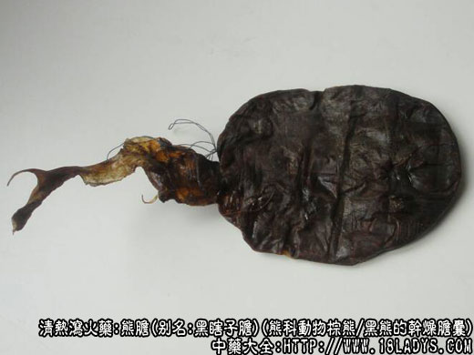

熊胆为较常用中药。始载于《唐本草》。
别名：狗熊胆，黑瞎子胆。
来源：为食肉目熊科动物，棕熊、黑熊的干燥胆囊、内含胆膏或干燥胆仁。
产地：主产于辽宁、吉林、黑龙江、云南、四川、青海、陕西、湖北等省较大的山林地区。
概述：熊胆，因产地加工习惯不同，以及狩猎季节不同，干燥后的胆膏或胆仁的色泽也不同。在市场上习惯分东胆（吊胆，主产于东北），金胆，菜胆，墨胆（扁胆，主产于西北、西南）。鉴别熊胆，外观形色不是主依据。关键在于胆仁、胆膏的色味等特点。 东胆、多呈囊状（烟袋荷包状）长约10～15厘米。胆嘴被束起。胆仁胆膏沉积干固于底部，下端呈钝圆形或半圆形。中段胆皮空虚皱褶。胆皮，黑褐色显光泽。囊内胆仁多呈稠膏状（俗称油胆）。颜色多乌黑色或菜青色，少有黄色。 金胆、胆囊多呈刀形或不规则的扁圆片状。长约10～15厘米，宽约5～10里面，厚约0.2～1厘米，薄者对光照呈半透明体。胆皮乌黑色或褐色。表面光滑或代有加工压扁时使用的器具的印痕。胆仁多呈块状黄色，质松脆易压碎，碎断粒显玻璃样光泽。
菜胆，胆仁菜青色，余与金胆同。
墨胆，胆仁包黑色，余与金胆同。
熊胆除在外形内色上有以上区别外，它的主要共同点是必须具有特异的熊腥味（狗腥味）。味极苦扩散性强。取胆仁少许涂于舌尖，味苦可扩散至喉咙。以细碎胆仁投入水中，立即溶出黄色色素，呈线状下沉而不散乱。如水面浮有微尘，可见驱尘现象或出现胆仁在水面上飞速旋转现象。把墨汁涂于玻璃片上再放胆仁碎粉于墨汁之上，可显分墨现象。反取胆仁碎末以火烧之起泡而无腥臭。
主要成分：含熊脱氧胆酸。此处并含胆甾醇和胆色素等。
药理作用：清热、消炎、镇痛、镇静。
炮制：剥去胆皮，取用胆仁，生用。多入丸散，不入汤剂。
性味：苦、寒。
归经：入肝、胆、心经。
功能：清热解毒，明目，止痉。
主治：目赤翳膜，热病惊痫，小儿惊风，恶疮痈肿等症。
临床应用：
（1）用于清热止痉、镇静。凡因传染病所致的高热抽搐，或烧伤，枪伤后热盛、诡语，可用熊胆0.6～0.9g内服。小儿急惊风，取熊胆0.15g也有助于止抽搐。
（2）用于消炎解毒。近年来在治疗重症肝炎、包括急性黄疸型肝炎和肝昏迷，用熊胆0.3～0.6g，用茵陈煎药冲服。
此外，熊胆还可外用治痈肿。例如外搽疮疖可消肿痛；急性咽炎、口腔溃疡，用熊胆外搽可以消炎。
（3）用于眼科，作用仍为消炎，眼结膜炎，或肿痛，或有翳膜，用熊胆配冰片（熊胆散），水化后点痛处可止痛并帮助退翳。犹又如新生儿生后有结膜炎症，流眼水，眼不能睁开，可用熊胆2厘～3厘煎水洗眼，或用熊胆少许开水融化点眼，一日数次，眼即开。
（4）用于止痛。熊胆外擦带状疱疹，可以止痛；胃、十二指肠溃疡病的剧烈疼痛、外伤肿痛和胆绞痛，可内服熊胆以助镇痛。
近年来，熊胆也试用于治疗小儿急性肾炎引起的高血压，初步观察有一定降压作用。
使用注意：熊胆虽有上述作用，胆价值昂贵，不要轻易使用，只在万不得已时才用。治痈肿和眼病，一般不必用熊胆。
用量：内服消炎、镇痛，0.6～2.4g；只作散剂或入丸剂用，不入汤剂。外用消炎退肿，2厘～3厘。
处方举例：熊胆散（寿域方）：熊胆2厘（厘是以前计量单位,1斤是16两,1两是31.25克。 1厘是0.03125克），冰片2厘，水化后点痛处(眼部发炎、痔疮发炎所致肿痛均可用)。
注：熊胆为贵重商品，过去往往有用其它胆伪充者，应注意区分。市场上多见的胆有牛、羊、猪等家畜胆。外形略同于熊胆，胆依据我们现有的牛、羊、猪的胆仁与熊胆有同有异。如胆能驱尘、能分墨、能溶解出黄绿色色素，胆味苦，这都是动物胆的共同点。胆也有不同之处如牛、羊、猪的胆仁多为菜绿色，而很少有黑黄两种。猪胆仁少或无玻璃样光泽，味苦而无狗腥气，扩散性不及熊胆，涂于舌上只表现局部苦味感。牛、羊胆有玻璃样光泽。但少涂于舌尖上显甜味而不苦，多涂始苦。扩散性更小。均无狗腥气。而羊胆仁则带有羊膻气。在溶解于水的实验中，以现有的熊、牛、羊、猪胆仁同时投入于带水静止玻璃杯中，熊胆溶解较快，放出色素较多，无不溶物或少有不溶物。牛羊胆仁溶解很慢，放出色素较少，而不溶物几乎和沉水时相同，变为类白色絮状物。猪胆仁，溶解情况慢于熊胆，快于牛羊胆，溶出色素也多于牛、羊胆，而少于熊胆仁，不溶物也少于牛、羊胆仁。取牛、羊、猪胆碎末少许用火烧之起泡后产生烧骨胶的臭味。这些情况仅限于现有样品试验，还待进一步研究分析。 关于熊胆的品质优劣问题，目前尚有争议，习惯认为黄色的金胆最好，菜绿色的菜胆稍次，黑色的墨胆最次。但东胆多墨色，其价值反高于金胆一倍以上。究竟谁优谁劣还待进一步研究。
关于熊胆，金、菜、墨三色的形成，目前也说法不一。根据接触到的各地所产的熊胆进行分析，认为胆色的变化主要是随着色素的增减所造成的。胆色素的增减又是和熊的生活、活动、饮食情况分不开的。胆汁生成与肝脏，伫于胆囊，用于消化。胆囊内的胆汁有入有出。无冬眠习性的动物的胆色绝大多数为黄绿色，如牛羊猪胆。而熊和一般动物不同，它有冬眠的习性，在寒冬季节它居洞中不食不动，东北地区严寒季节较长，狩猎者多有熊冬眠期间猎取，生产的东胆大部都为黑色。由此看出，冬季熊不食不动，胆汁很少向外分泌，而色素则不断增加，因而形成墨胆。西南地区四川云贵等省气候比较温和，为了保护农产品生产，在夏秋两季为猎熊旺季，熊在这些地区可不冬眠而越冬或眠期较短，因而西南地区的熊胆则金菜墨并重。由此分析熊多动多食时期胆囊中的胆汁出入流转较大，色素较淡呈黄色，这时猎取的胆应属于金胆。少食，少动时期胆汁中的色素增多于出，故呈菜色。冬眠时期不食不动，胆汁中色素增多而很少向外分泌，故呈墨色。究竟含色素高者好，还是含色素少者好，必须要探讨。